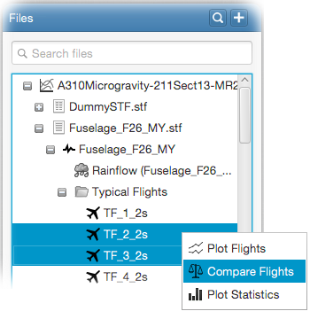

For this, select the flights you want to compare from
within the file tree, right-click and select

You will see that selected flights are plotted on different time scales based on their number of peaks. By default, all segments of
compared flights are plotted. You can select the flight segment you want to compare from the
Stress components can be separately plotted for each compared flight from the